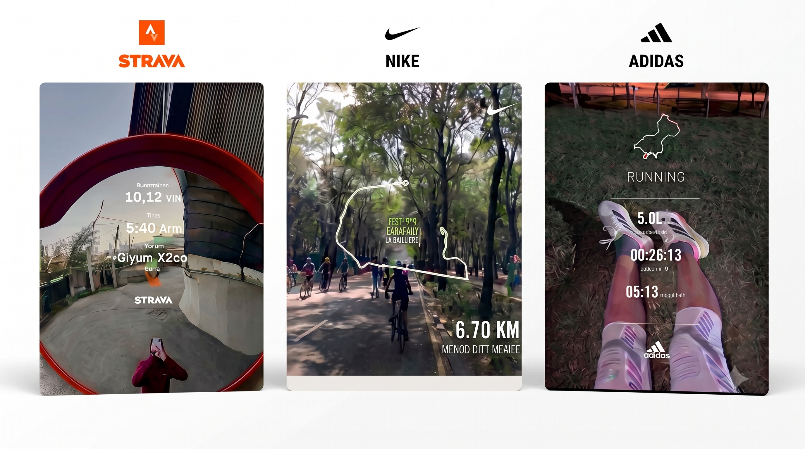
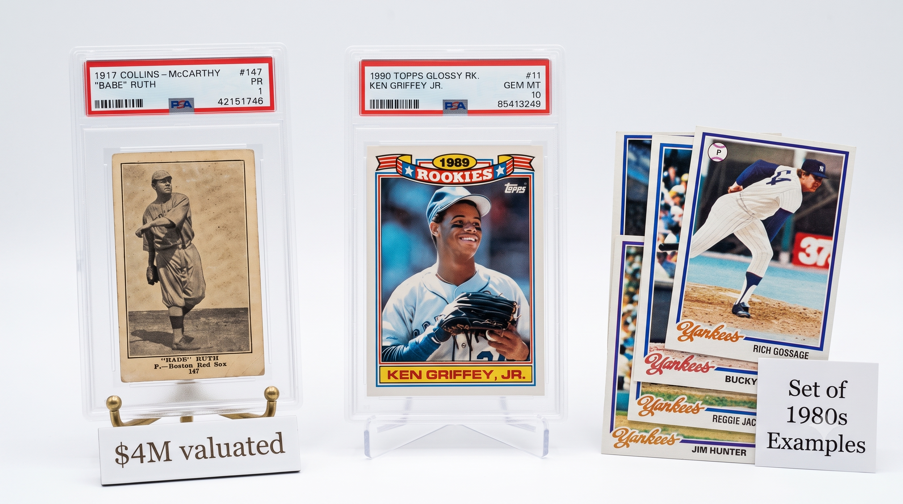
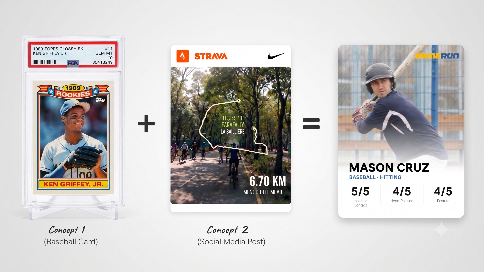
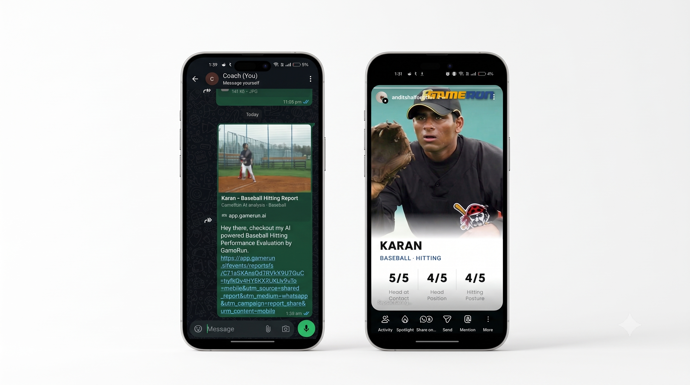

A New way to Share
Sharing cards that users care about.
Users wanted to show off their stats, but sharing raw links were boring and unshareable on social media had less than 10% report shares of the total
This friction broke our organic growth loops, preventing athletes from naturally acting as brand advocates.
We needed to transform boring data dumps into status-driven, highly shareable visual artifacts to drive acquisition.

older versions looked bland and baseless
Existing Mental Models

I audited industry leaders like Strava, Nike, and Adidas to understand their sharing loops. They don't share raw stats; they share visual proof of effort. By leveraging these existing mental models, we immediately reduce user friction. These highly visual formats act as powerful social proof, turning personal milestones into community engagement.
The Nostalgia Heuristic

Sports analysis is about identity, not just analytics. I dug into US sports culture and anchored our concept on the nostalgia of baseball trading cards. This taps directly into the endowment effect; when users feel a sense of ownership over a personalized, collectible aesthetic, their intrinsic motivation to share skyrockets.
Synthesizing Form & Function

The winning design marries the emotional, tactile weight of a vintage trading card with the clean, glanceable UI of a modern social post. This format translates complex AI analysis into an instantly recognizable, proprietary brand asset. It gives the user a quick dopamine hit of validation while seamlessly acting as top-of-funnel marketing for the app.
Progressive Disclosure Across Platforms

The design system scales across environments, from transient IG Stories to text-heavy WhatsApp groups. Using progressive disclosure, the architecture adapts to the report type. For casual flexing, it highlights hero metrics. For deeper, text-heavy AI evaluations, it parses the data into digestible, bite-sized visual chunks so the viewer is never overwhelmed.